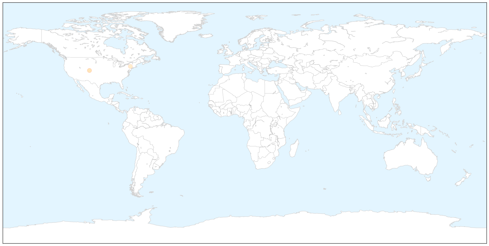
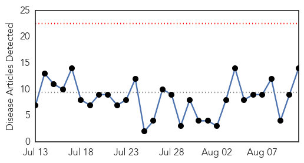
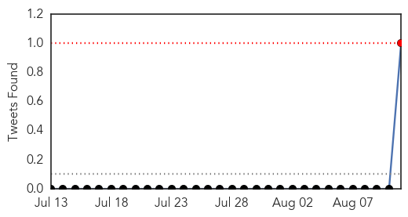
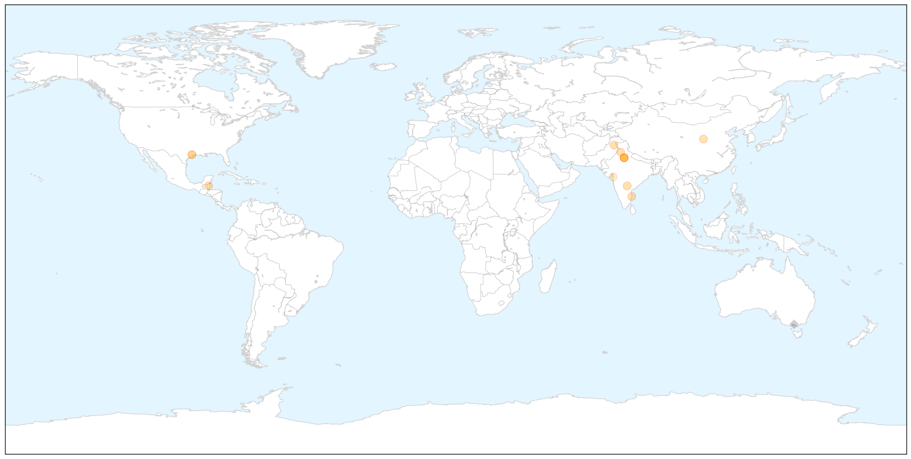

Bubonic Plague
30-Day Web Trend
0 alerts, 0 warnings

30-Day Twitter Trend
0 alerts, 0 warnings

Article Locations

X

Article Confidences

Top Articles:
Top Tweets:
-
No tweets found for Aug 11, 2015
Dengue Fever
30-Day Web Trend
0 alerts, 0 warnings

30-Day Twitter Trend
1 alerts, 0 warnings

Article Locations

X

Article Confidences

Top Articles:
- 0.987
- Health officials fight potential for cholera
- 0.985
- Despite dry, hot weather, dengue cases spike
- 0.975
- Steps Taken To Contain Outbreak Of Dengue Enquired By Telangana Health Minister
- 0.970
- Steps taken for prevention of gastroenteritis, acute watery diarrhoea
- 0.967
- Officials step up vector control operations after dengue death in Chennai
- 0.957
- With dengue on rise, Ludhiana hospitals become top choice for nearby cities
- 0.930
- Shaanxi province anthrax outbreak affects 19: Chinese media
- 0.914
- Three-year-old dies of dengue, cases cross 100 mark
- 0.858
- Dengue alert: No aspirin over the counter in Delhi
- 0.817
- Dengue kills 3-year-old
- 0.792
- Can America cope with a resurgence of tropical disease?
- 0.777
- Why Are We Letting Infectious Diseases Make A Comeback?
- 0.644
- Dengue downs Diamond City
- 0.518
- Delhi Govt Bans Over-The-Counter Sale Of Aspirin, Disprin, Brufen Without Prescription
Top Tweets:
- 0.538
- RT: Project presentations dengue malaria leptospirosis influenza chagas noncommunicabledisease climatehealthBrazil htt…